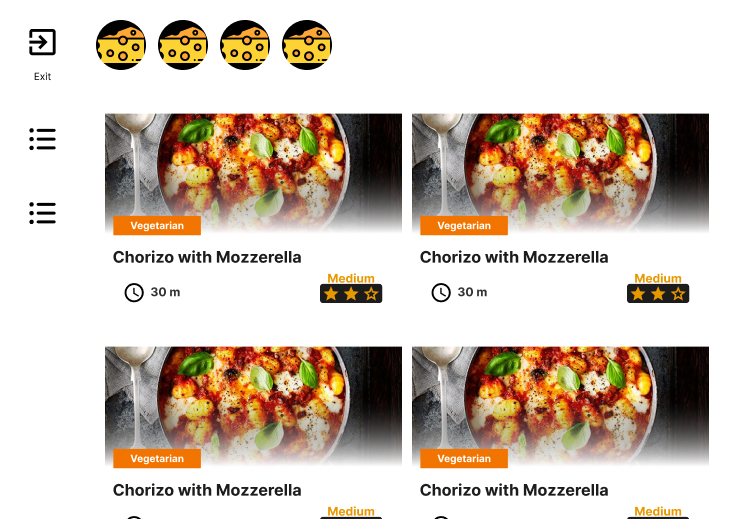
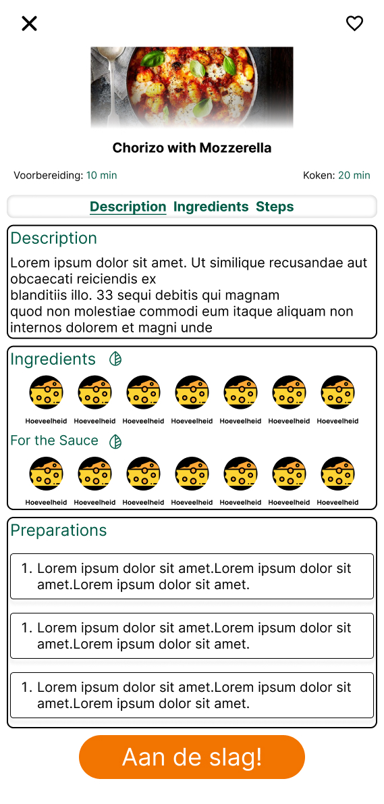
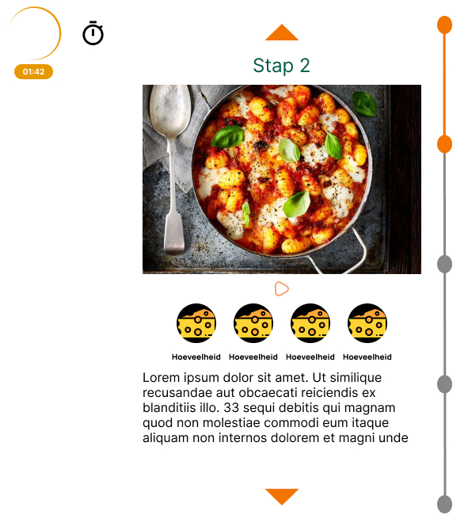
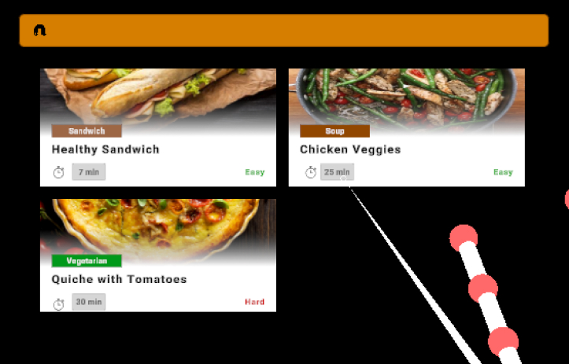
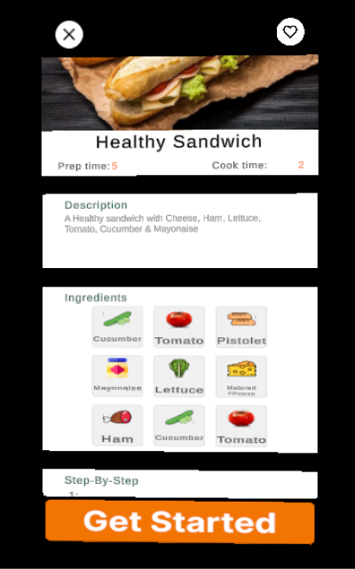
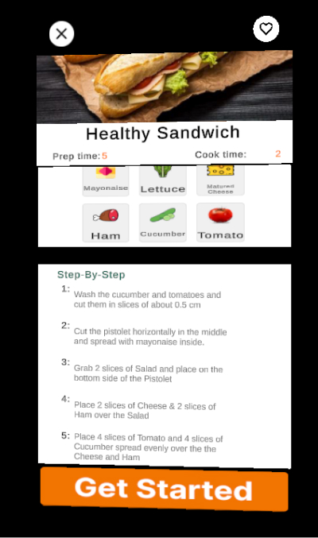
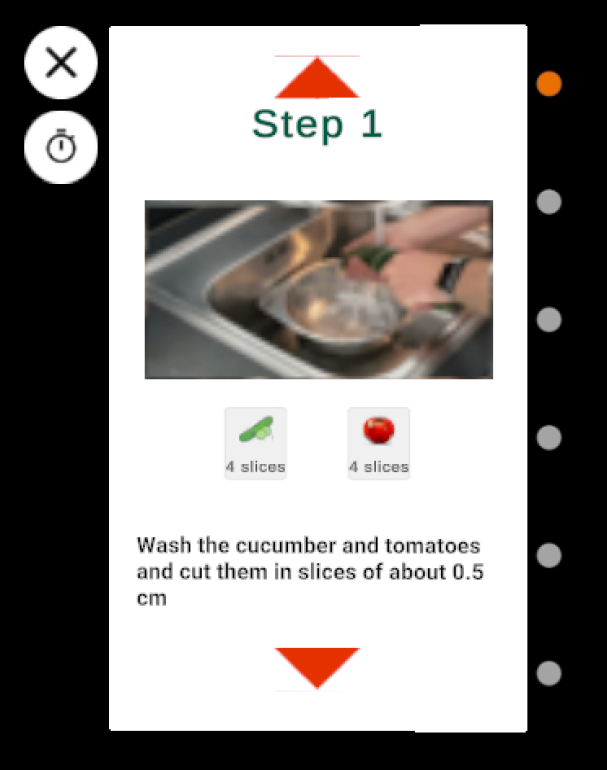
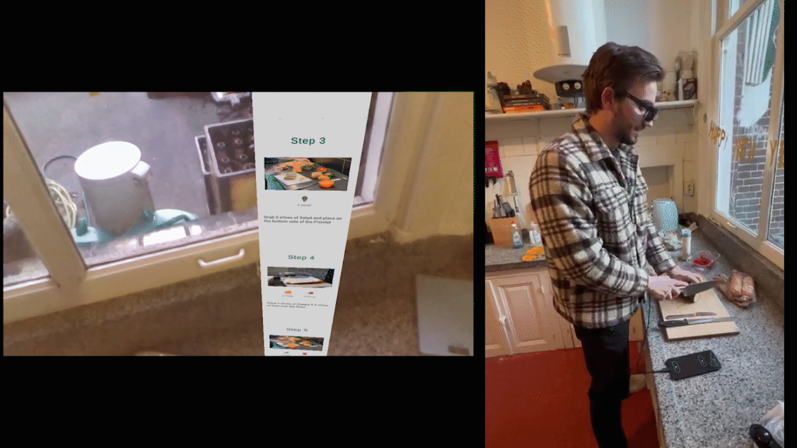

ChefAR for HeadCandy
Learn to cook with Nreal glasses
This project was trying a way to learn new cookers to cook new meals whilst using the Nreal Glasses. My responsibilities were to research beginner cooks and students, design the interaction, development in Unity, test the product on the users and write the results on paper.
The idea was with the use of the Nreal Glasses you can make an application with the recipe hovering in your kitchen. Reading whilst cooking with the glasses is quite difficult so we used short video’s from up to 10 seconds to show the steps needed. The user can then (once finished) go to the next step.
The biggest challenge was the design of the interaction. The best way for the user to interact with the application was with hand gestures. How can you make intuitive interaction were the user can immediately use the application without explanation? So which hand gestures should the user make and are they intuitive? I believe I found the answer to that during this project.
Want to see the tests. Don't be hesitant to ask! :)
The border in the following images was necessary since the background of the design is transparent.







